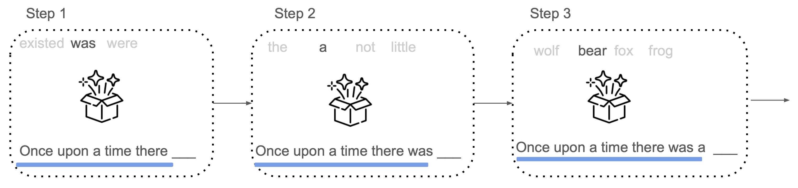
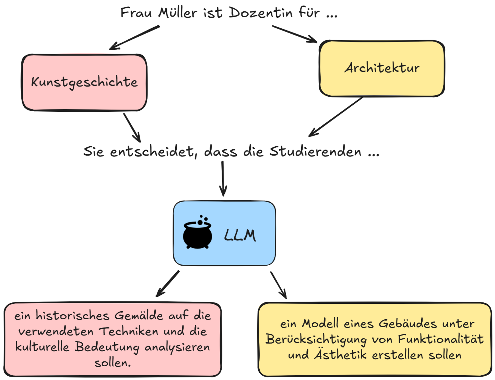

Was ist ein Prompt?
- Ein Prompt ist ein Text (Anweisung), das einem generativen KI-Modell gegeben wird, um bestimmte Informationen zu generieren oder zu verstehen.
- Prompts dienen als Startpunkt beispielsweise für die Generierung von Ideen, Texten, Übersetzungen und Antworten auf Fragen.
Wie wird Text (Output) erzeugt?

Wie kann ich den Output beeinflussen?�

Prompting: Grundlagen
Überblick:
- Sei klar und präzise
- Fange einfach an und verbessere
- Verwende Beispiele und Kontext
- Leite den Denkprozess
- Nutze ChatGPT/Copilots “Wissen”
- Verwende Rollenspieltechniken
1. Sei klar und präzise
- Formuliere deine Aufgabe oder Frage präzise
- Gib relevanten Kontext und Details an
- Unterteile komplexe Aufgaben in kleinere Schritte
Beschreibe, wie KI in der Musikproduktion eingesetzt wird.
Beschreibe in etwa 200 Wörter, wie Künstliche Intelligenz zur Analyse und zum Arrangement von Jazz-Kompositionen verwendet werden kann. Gib konkrete Beispiele für Algorithmen oder Werkzeuge an, die in der Musikproduktion genutzt werden, um Muster zu erkennen und Vorschläge für Harmonievariationen zu generieren.
2. Fange einfach an und verbessere
Beispiel 1:
Entwickle ein vollständiges Regiekonzept für eine moderne Adaption von Shakespeares Hamlet, einschliesslich Bühnenbild, Kostümgestaltung, Lichtdesign und einer Analyse der Charaktere.
Erstelle drei zentrale Ideen, wie eine moderne Version von Hamlet durch Bühnenbild und Kostüme visuell vermittelt werden könnte.
- Wichtig: Dies ist nur der Ausgangspunkt. Basierend auf der Antwort solltest du weitere Fragen stellen oder um Erklärungen bitten. Zum Beispiel:
- “Kannst du ein Beispiel für ein spezifisches Kostümdetail geben, das moderne Elemente einbezieht?”
- “Wie könnte das Bühnenbild die Stimmung oder den inneren Konflikt der Charaktere widerspiegeln?”
2. Fange einfach an und verbessere
Beispiel 2:
Erstelle einen umfassenden, mehrstufigen Behandlungsplan für einen Patienten mit chronischer Hypertonie, einschließlich Medikamentenregime, Lebensstiländerungen, Nachsorgezeitplan und möglichen Komplikationen.
Schlage drei wichtige Lebensstiländerungen für einen Patienten vor, bei dem kürzlich eine leichte Hypertonie diagnostiziert wurde.
- Wichtig: Dies ist nur der Ausgangspunkt. Basierend auf der Antwort solltest du weitere Fragen stellen oder um Erklärungen bitten. Zum Beispiel:
- “Kannst du mehr Details zu einer dieser Änderungen geben?”
- “Welche Auswirkungen hätte jede dieser Änderungen auf den Blutdruck?”
- “Gibt es mögliche Herausforderungen bei der Umsetzung dieser Änderungen?”
3. Verwende Beispiele und Kontext
Beschreibe, welche Art von Output du erwartest Gib ein Muster vor, wenn du ein bestimmtes Format oder einen Stil wünschst
Erkläre, wie man eine Skulptur restauriert.
Erkläre, wie man eine Marmorskulptur mit sichtbaren Rissen restauriert. Berücksichtige dabei Schritte wie:
- Sichtung und Dokumentation des Schadens
- Auswahl und Testen geeigneter Materialien zur Rissfüllung
- Anwendung und Glättung des Füllmaterials
Gib Details zu den Werkzeugen, Materialien und Techniken an, die für jeden Schritt notwendig sind.
4. Leite den Denkprozess
Bitte ChatGPT/Copilot, “Schritt für Schritt” zu denken oder seine Überlegungen zu erklären. Dies führt oft zu genaueren und detaillierteren Antworten.
Restauriere ein beschädigtes Ölgemälde mit mehreren Rissen und Farbverlusten.
Lass uns die Restaurierung eines beschädigten Ölgemäldes mit Rissen und Farbverlust Schritt für Schritt angehen:
- Zuerst beschreibe die Art und das Ausmass der Schäden.
- Welche Faktoren könnten für die Schäden verantwortlich sein (z.B. Alterung, Lagerungsbedingungen)?
- Welche Materialien und Techniken könnten zur Stabilisierung der Risse verwendet werden?
- Welche Farbpigmente und Fixiermittel könnten zur Ausbesserung des Farbverlustes geeignet sein?
- Welche Tests könnten vorher an kleinen Stellen des Gemäldes durchgeführt werden, um die Wirkung der Materialien zu prüfen?
Beginne mit Schritt 1.
5. Nutze ChatGPT/Copilots “Wissen”
- LLMs verfügen über breites Wissen
- Frage nach Erklärungen oder Hintergrundinformationen
- Gib relevanten Kontext an, damit ChatGPT/Copilot gezielter antworten kann
Erkläre, wie ein Orchester funktioniert.
Erkläre, wie ein Sinfonieorchester funktioniert, als würdest du Musikstudierenden im ersten Semester eine Einführung geben.
Vergleiche dabei die Struktur eines Orchesters mit einem gut koordinierten Team, bei dem jede Gruppe eine spezifische Aufgabe übernimmt.
Erkläre die Rolle der verschiedenen Instrumentengruppen (Streicher, Bläser, Schlagwerk) und die des Dirigenten und zeige, wie sie zusammenarbeiten, um ein harmonisches Ganzes zu erzeugen.
5. Nutze ChatGPT/Copilots “Wissen”
Immer den Output eines LLM anhand externer Quellen überprüfen. Sprachmodelle sind keine Nachschlagewerke.
6. Verwende Rollenspieltechniken
- Bitte ChatGPT/Copilot, eine bestimmte Rolle oder Perspektive einzunehmen
- Dies kann zu spezifischeren und relevanteren Antworten führen
Gib Tipps zur Verbesserung der Bühnenpräsenz.�
Du bist eine erfahrene Theaterregisseurin, die seit über 15 Jahren mit Schauspielstudierenden arbeitet.
Was sind deine drei wichtigsten Tipps für junge Schauspieler, um ihre Bühnenpräsenz zu stärken?
Berücksichtige dabei Aspekte wie Körperhaltung, Stimme und Interaktion mit dem Publikum und gib konkrete Übungen oder Techniken an, die die Schauspieler ausprobieren können.
Bonustips
- Mentales Modell: Ein LLM wie einen “Junior Assistant” behandeln.
- Struktierten Output verlangen (Tabellen, Listen, etc.)
- Input strukturieren (LLMs können diesen besser “verstehen”)
- Ein LLM (z.B. ChatGPT/Copilot) nach Prompting Tips fragen. LLMs sind nicht auf dem neuesten Stand, aber haben sehr wahrscheinlich die bis vor kurzem aktuelle Literatur “gelesen”.
- ChatGPT Tip: Anweisen, Python zu benutzen. Pyhton ist eine Programmiersprache, die ChatGPT sehr gut beherrscht. Mit Python kann ChatGPT Daten analysieren, Grafiken erstellen, Word/Excel/Powerpoint Dateien erstellen.
Back to top